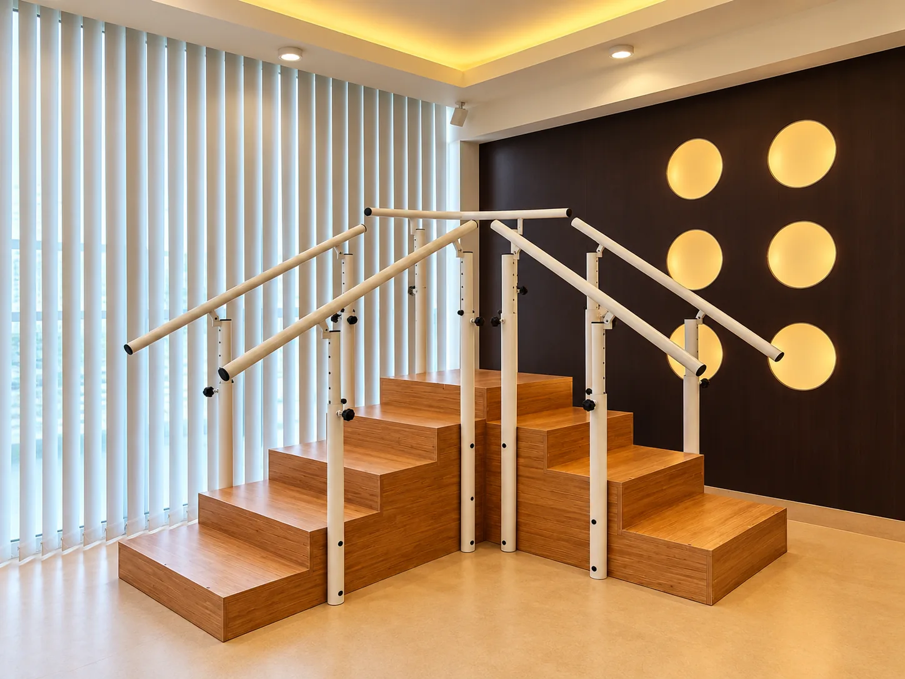

01/06
Fizik Tedavi & Rehabilitasyon
Ameliyat sonrası dönemde ve eklem problemlerinde, tedavi planınıza göre adım adım ilerleyen programlar. Her aşama, değerlendirme sonuçlarınıza göre yeniden planlanır.
Hangi durumlarda?
- Diz, kalça ya da omuz ameliyatı geçirenler
- Kireçlenme ve eklem ağrısı yaşayanlar
- Bel ya da boyun fıtığı nedeniyle hareketi kısıtlananlar
- Yürüme ve denge güçlüğü çekenler
Seansta neler yapıyoruz?
- Eklem hareket açıklığı ve kas kuvveti ölçümü
- Size özel tedavi edici egzersizler
- Paralel bar ve merdivende yürüme–denge eğitimi
- Evde sürdüreceğiniz egzersiz programı